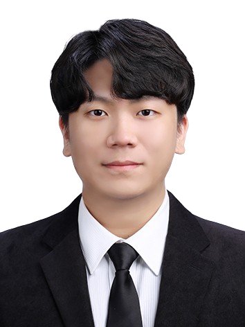
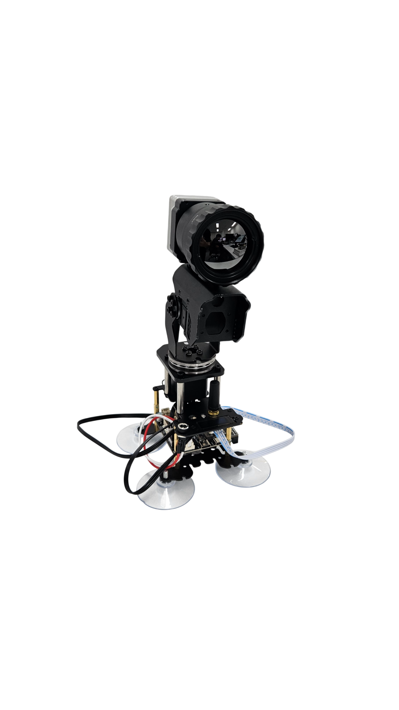

윤오름팀장
시스템 설계 · 통신
GUI · 짐벌 제어
윤오름 · 김재남 · 윤관 · 정하건 · 홍정호


시스템 설계 · 통신
GUI · 짐벌 제어

Runtime 구현
멀티스레드 파이프라인

적외선 모델 학습
경량화 · 최신 모델 조사

추적 알고리즘
성능 검증 · 개선

Runtime 최적화
NPU · 추론 가속
LWIR: 장파적외선 열영상 · DEEPX NPU: 보드에서 검출 모델을 실행하는 가속기
열영상 수신
보드에서 영상 처리
PC에서 대상 선택
카메라 방향 제어
입력 주기 약33.3 ms
33 ms 이내 · 입력 버림0 · 순서 오류0
재포착 · 수동 개입 · 정지
영상 수신 · NPU 검출
ByteTrack · OC-SORT · BoT-SORT
표적 위치 · PC 명령·상태

검출 누락 →
추적 입력도 사라짐
같은 사람도 박스 범위가 달라지면, 추적 입력과 조준점이 흔들릴 수 있다.
출발 가중치
10 epoch · 상체 E10
박스·관절·누락을 함께 평가
표준 증강: 박스 +1.88%p
관절 78.35 → 77.31%
실내·실외 추적에서
함께 앞선 후보 없음
가중치와 시험 분리
입력·출력·보정 확인
모델과 실행 경로 확인
검출 점수별 2단계 매칭
실제 관측으로 가림 뒤 연결
박스 상태·점수 반영 매칭
재현율도 87.7%로
BoT-SORT의 85.3%보다 높음
| 같은 녹화 비교 | 끔 | 켬 |
|---|---|---|
| KeepID 번호 변경 | 47 | 43 |
| 가드: 0.5초 초과 뺏김 | 20 | 17 |
위치 예측과 신원 연결은
서로 다른 평가
다음 프레임 준비
요청 제출·완료
추적·영상 전달
각 타일 검출 → 원래 좌표로 복원
결과 병합 · 사람 NMS
480×384 입력
가중치 유지
264장 × 좌·우
528조각
NPU 그래프 1개
CPU 부분 0
오른쪽 x +256
중심320 → NMS
| 변환 진단 | 전체 화면 | 분할 |
|---|---|---|
| 맞힌 사람 수 · FP32 | 445 | 457 |
약 30 FPS 실카메라 입력
입력 큐 버림 1장
처리 순서 오류 0
33 ms 초과 5장
최대 44.582 ms
805장 · 초과 4장
최대 57.19 ms
592장 · 초과 217장
최대 66.87 ms
동시 타일·E10+3
p95 25.71 ms
일부 로컬 코드 누락
전체 화면 실행 기록
분할 재연결 작업
가드·추천·보정 변경
| 구분 | 확인된 기록 |
|---|---|
| 재설치 직후 12분 | 33 ms 초과 14,803 / 21,579장 (68.6%) |
| 현재 최종 시연 | 모델·실행 경로·스위치의 일치 확인 필요 |
표적 위치를
제어 입력으로
지금 얼마나 벗어났나
얼마나 오래 남았나
이번 설정: Ki = 0얼마나 빠르게 변하나
누적 보정에 의한 넘침 가능성 → PD와 불감대로 안정성 우선
선택 ID 위치로 추종
방향 입력으로 조작
입력 상실·오래된 관측 확인
속도 90% 도달 158 ms
STOP 효과 64 ms
SPD·방향별 2~3회
세로·SPD30 초과 미측정
TMOT·PTB-TIR·BU-TIV
가상 카메라 입력
검출·추적·KeepID
실측 속도·지연
Kp 30 유지
마지막 기록 lead200 켬과 불일치
정한 재포착 기준 미통과
| 가상 재포착 차이 | 95% 구간 |
|---|---|
| vel: +20%p | +7 ~ +32%p |
| 장치 기록 fused: +6%p | −11 ~ +21%p |
vel 이득을 fused 성과로
옮겨 설명하지 않음
가속150: 추종 가능 속도
약750 → 900 px/s
원거리 이득1.6: 급정지
지나침 11 → 35 px
넓게·좌우 훑기: 보류
좁게 보기: 기능 시험만


ByteTrack · OC-SORT · BoT-SORT
접수 → 완료 응답
선택 ID · 모드 확인
운용자 개입
추적기 번호 선택
Runtime에 변경 요청
카탈로그 설정 · 프레임 경계
Accepted → Completed
모델·추적기·제어
선택 → 추종 → 가림
수동 전환 → 정지
assets/rooftop-demo.mp4
프레임 교대 40.47 ms 대비
실카메라 · 각 65초
기존 호출 26.33 ms 대비
무인 실카메라 · 별도 시험
입력 버림·순서 오류 0
33 ms 초과 5장
상체 기준 정리·E10 학습
OTP2 박스 AP 46.28%
BoT-SORT HOTA 60.7
PC에서 추적기 선택·변경
동시 타일 서버 p95 25.71 ms
짐벌 응답 실측·가상 시험